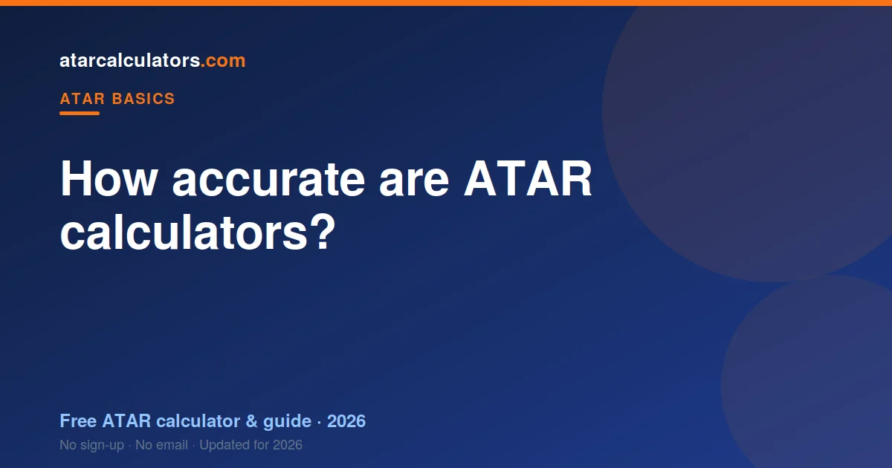

ATAR calculators produce estimates, not predictions. Most are accurate to within about ±2 to ±5 ATAR points, depending on your state, the calculator you use, and how realistic your input marks are. No calculator can predict your exact ATAR, because the current year's scaling does not exist until results are released. The best use of a calculator is as a planning tool — to see whether you are on track, and to set targets — not as a guarantee of your final rank.
Key takeaways
- ATAR calculators produce estimates, not predictions.
- Most are accurate to within about ±2 to ±5 ATAR points.
- Accuracy depends on your state, the calculator, and your input marks.
- No calculator can be exact, because current-year scaling is unknown until results.
- Different calculators give different results because they use different data and assumptions.
- Bonus points are not included in most calculators — they change your selection rank, not your ATAR.
- Use a calculator to set targets and check progress, not to make admission decisions.

What an ATAR calculator actually does
An ATAR calculator is an online tool that estimates your ATAR from the marks or study scores you enter. It does this by applying historical scaling data — usually from the most recent year or the past few years — to your results, and then converting the aggregate into an ATAR using an aggregate-to-ATAR table.
As Professor Jacqui Ramagge of the University of Sydney puts it, ATAR calculators "work on historical data" and "try to tell you how you might have done if you had been in a previous cohort". The key word is might. They do not know your final moderated marks, and they do not know the current year's scaling. They are estimating from the past, not calculating the present.
Most calculators work in one of two directions. You can work forwards from your marks to an estimated ATAR, or backwards from a target ATAR to the marks you would need in each subject. Both are useful, but both are estimates. The "backwards" mode is particularly helpful for students setting goals: it tells you what marks you need to achieve in each subject to reach a target ATAR.
The quality of the calculation depends on three things: the quality of the scaling data the calculator uses, the sophistication of the method it applies, and the accuracy of the marks you enter. A calculator using last year's official scaling and a correct aggregation method, with realistic input marks, will give a useful estimate.
How accurate are they?
There is no universal margin of error, because accuracy depends on too many variables. But the general picture is clear.
Well-built calculators that use recent official scaling data and realistic inputs are typically accurate to within about ±2 to ±5 ATAR points. Some state-specific calculators claim tighter accuracy — for example, QLD calculators calibrated against QTAC's ATAR Navigator are typically within about ±2 points, and some VIC calculators claim ±2 to ±4 points.
| Calculator type | Typical accuracy |
|---|---|
| Well-built state-specific calculators (VIC, QLD) | ±2 to ±4 ATAR points |
| HSC calculators (NSW) | ±3 to ±5 ATAR points |
| IB conversion | ±0.5 ATAR points |
| General "all states" calculators | A few ATAR points, ballpark only |
Accuracy figures are indicative, based on published claims and community reports. No calculator guarantees a specific margin.
One school test ran the same subjects and same scores through four different calculators. The results varied by up to several ATAR points, especially at lower scores. In one case, the same inputs produced estimates ranging from 99.40 to 99.60 at the top, and from 55.25 to 58.50 at the lower end. That is a useful reminder: a calculator's two-decimal output looks precise, but the underlying estimate is not.
Why different calculators disagree
Two calculators can take the same marks and give you different estimates. That is not a bug; it is a consequence of the choices every calculator has to make.
The main sources of disagreement are:
- Which year's scaling data is used. Some use last year's data, some average the past few years, some use older reports.
- How many decimal places are kept. Rounding early vs rounding late changes the final aggregate.
- Whether bonus points are included. Most calculators exclude them, but some include them, which inflates the estimate.
- How small-cohort subjects are handled. Subjects with small cohorts are less predictable, and calculators handle them differently.
- Different state rules. A calculator built for another state will not give a meaningful estimate for yours.
The practical lesson is simple: use a calculator built for your state, and treat any single number as one estimate among several, not as the truth.
Why no calculator can be exact
The fundamental reason no ATAR calculator can be exact is that the current year's scaling does not exist until results are released. Scaling depends on how the entire cohort performs in each subject in that year. A calculator cannot know that in advance, so it substitutes historical data. That substitution is the source of almost all the error.
Beyond scaling, there are several other reasons a calculator's estimate will differ from your actual ATAR:
- Your input marks are not your final marks. Trial marks, school assessment marks and exam marks are all different.
- School moderation changes your marks. Your school assessment marks are moderated against the state cohort, which can raise or lower them.
- Small cohorts are unpredictable. If a subject has a small cohort, scaling can swing more sharply from year to year.
- The ATAR is a rank, not a mark. It depends on how everyone else performs, which is unknowable in advance.
As the University of Sydney puts it plainly: "All ATAR calculators produce an estimate. None of them can actually calculate your ATAR."
Accuracy by state
Accuracy varies by state because each admissions centre publishes different amounts of data. Some states publish detailed scaling reports, which allows calculators to be more precise. Others publish less, which makes the estimate rougher.
| State | Data published | Practical accuracy |
|---|---|---|
| NSW / ACT (UAC) | Scaling report, but UAC asks calculators not to use its data | ±3 to ±5 ATAR points |
| VIC (VTAC) | Detailed scaling report and aggregate-to-ATAR table | ±2 to ±4 ATAR points |
| QLD (QTAC) | Subject scaling published; TEA-to-ATAR not published | ±2 ATAR points (calibrated) |
| SA / NT (SATAC) | Limited subject scaling published | ±3 to ±5 ATAR points |
| WA (TISC) | No scaled-mark-to-ATAR table published | Ballpark only |
| TAS (TASC / UTAS) | Conversion tables published | ±2 to ±4 ATAR points |
| IB | Fine-grained conversion by ACTAC | ±0.5 ATAR points |
Based on published calculator claims and admissions centre data availability. Accuracy figures are indicative.
The key point is not that some states are "better" than others, but that the data available determines how precise a calculator can be. A calculator for VIC, where VTAC publishes detailed scaling tables, can be more precise than a calculator for WA, where TISC does not publish a scaled-mark-to-ATAR table.
Your inputs matter most
The single biggest factor in a calculator's accuracy is what you put into it. A calculator using perfect scaling data but unrealistic inputs will still give a misleading estimate.
Calculators are more accurate when:
- You enter realistic final marks, not hopeful targets.
- You use a calculator designed for your state.
- The calculator uses recent scaling data.
- Your performance remains consistent between trials and finals.
They are less accurate when:
- You enter hopeful target marks rather than current marks.
- You rely on early Year 11 results.
- Your trial exams differ from the final exams.
- The calculator uses outdated data.
- Your subject has a small or unpredictable cohort.
In short: a calculator is only as good as the numbers you feed it. Garbage in, garbage out.
Bonus points are not included
Most ATAR calculators estimate your base ATAR, not your selection rank. Bonus and adjustment points — for equity, subject performance, location or special circumstances — are added by universities after the ATAR is calculated. They do not change your ATAR; they change your selection rank.
This matters because a calculator might tell you that you are just short of a course's cut-off, when in reality your adjustment factors would push your selection rank above it. In some states the difference is significant. In South Australia, the maximum adjustment is 9 points; in New South Wales, some institutions offer up to 15 points.
How to use a calculator well
The best way to use an ATAR calculator is as a planning tool, not a prediction.
Run it with realistic marks. Use your most recent assessment results, not your target marks.
Treat the output as a band, not a number. If a calculator says 85.00, think "somewhere in the low-to-mid 80s", not "exactly 85.00".
Run multiple scenarios. See what happens if your marks improve by 5%, or if one subject goes better than expected.
Use it to set targets. The "reverse" mode — entering a target ATAR and seeing the marks you need — is genuinely useful for motivation and planning.
Do not make admission decisions based on it alone. Use it to inform your preferences, not to finalise them.
You can try our state-by-state ATAR calculators to see how different marks translate into estimates, or use the target ATAR calculator to work backwards from a goal.
What not to do
Do not treat the estimate as a guarantee. A calculator that says 90.00 does not mean you will get 90.00.
Do not compare estimates from different calculators and assume one is "right". They are all estimates, and they will disagree.
Do not ignore prerequisites. A calculator estimates a rank, not your eligibility for a course.
Do not let a high estimate make you complacent. A calculator predicts based on your current marks; if you coast, those marks may not hold.
Do not let a low estimate discourage you. Many students outperform their trial-based estimates.
Want to see how your marks translate into an ATAR?
Open the state-by-state ATAR calculators →Common questions
How accurate are ATAR calculators?
ATAR calculators are estimates, not predictions. Most are accurate to within about ±2 to ±5 ATAR points, depending on your state, the calculator you use, and how realistic your input marks are.
Why do different ATAR calculators give different results?
Different calculators use different years of scaling data, different rounding methods, different treatment of bonus points, and different assumptions.
Can an ATAR calculator predict my exact ATAR?
No. The ATAR is calculated from your final moderated marks and that year's scaling, which is not known until results are released.
Which ATAR calculator is most accurate?
The one built specifically for your state, using the most recent published scaling data. UAC's ATAR Compass is the closest to official for NSW, and VTAC's data underpins the best VIC calculators.
Are ATAR calculators more accurate for some states than others?
Yes. Accuracy varies by state because each admissions centre publishes different amounts of data. NSW and VIC publish detailed scaling reports, so calculators for those states can be more precise.
Should I use trial marks in an ATAR calculator?
You can, but treat the result as a rough guide only. Trial marks vary in difficulty and marking standards between schools.
Do ATAR calculators include bonus points?
Most do not. Bonus and adjustment points are added by universities after the ATAR is calculated. Calculators estimate the base ATAR only, not your selection rank.
How should I use an ATAR calculator?
Use it as a planning tool, not a prediction. Run it with realistic marks, treat the output as a band a few points wide, and use it to set targets and check whether you are on track.
What is the difference between an estimate and a prediction?
An estimate uses last year's scaling and the marks you enter. A prediction usually means an estimate built from marks you expect rather than real ones, so it is rougher.
When are ATAR estimates least reliable?
At very high ranks, where tiny mark differences move the rank, and for unusual subject combinations or small-cohort subjects. Predicted marks add further uncertainty.
See where your marks land
Use our free state-specific calculators to estimate your ATAR and set your targets.
Open the ATAR calculators